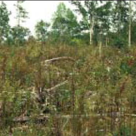
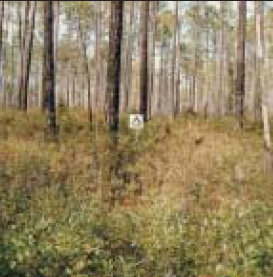

|
Fire Behavior Fuel Model SH3 (143) -- Moderate Load, Humid Climate Shrub |
Scott and Burgan (2005) classify Fire Behavior Fuel Model SH3 (143) in the Shrub Fuel Type and describe it as follows:
The primary carrier of fire in SH3 is woody shrubs and shrub litter. Moderate shrub load, possibly with pine overstory or herbaceous fuel, fuel bed depth 2 to 3 feet (0.6 to 0.9 meters). Spread rate is low; flame length low.
Fuel model parameters are available by viewing the Fuel Model Table of Parameters or right-clicking on the fuel model description in the Input Guide window and selecting View parameters.
Scott and Burgan's (2005) photographs on page 43 are examples of fuels fitting this model.
|  | Scott and Burgan (2005) Photo 1, Fire Behavior Fuel Model 143. |
|  | Scott and Burgan (2005) Photo 2, Fire Behavior Fuel Model 143. |